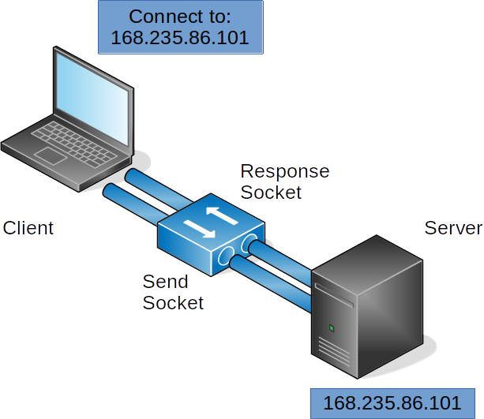
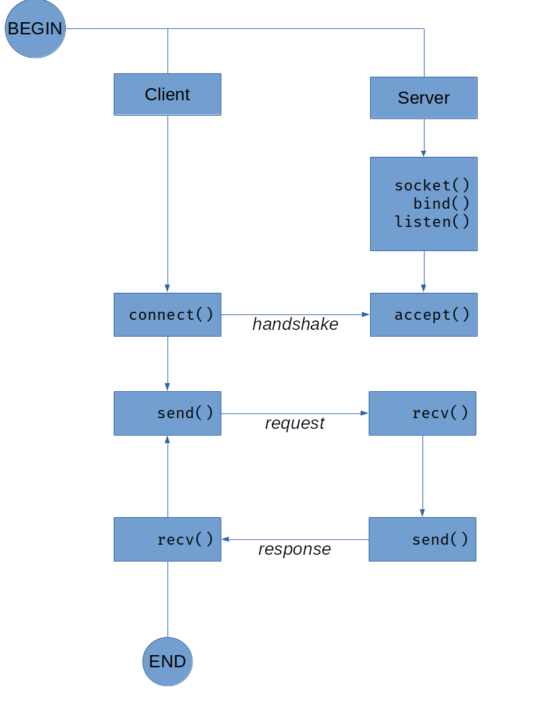
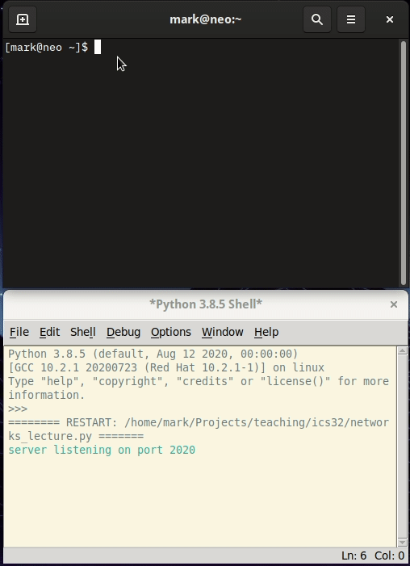
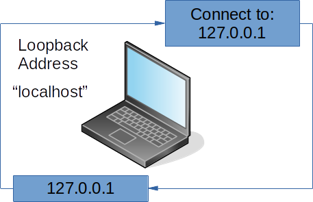
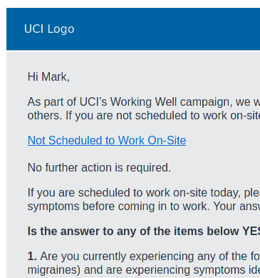

Week 2 Notes¶
Note
Keep an eye weekly pages as they might be updated throughout the week.
Week 2 Overview¶
It’s week 2. You should be finalizing your work on assignment 1 right about now and getting ready to start assignment 2. The lectures for this week include topics that you will need to start learning for assignment 2.
- Quick Links:
Lecture Materials¶
- Lectures for Week 2
Networks and Sockets¶
Working with Sockets¶
In a1 and a2, you are tasked with storing and retrieving data from the file system by opening, reading or writing, and closing a file using Python’s built-in functions for file management. open(), close(), read(), and write(), as examples, allow us to open a stream to a file to send and receive data to a file located in our computer’s file system
But what if we wanted to send and receive data to a different computer? We could continue to use the file system to store the data and then find a way to transfer the file over a network connection. Or, we could create a direct connection to a networked computer and stream the data directly. Since we are not going to concern ourselves with the transfer of files just yet, let’s look at how we can use Python’s networking interface to send data to another computer.
In Python, we can think of a networking interface as any tool that facilitates communication with another computer over an ethernet connection. In the following diagram, a network connection has been established between two computers. Although the diagram does not specify, we can assume that the client (laptop) and server (box) are both connected to a common network (e.g., a corporate lan, wan, or the Internet). In order to communicate with each other, the server exposes a unique IP address (168.235.86.101, as depicted here for example) and the client must know of that IP address.

When the client is ready to connect, it first checks to see if the server’s address is available for connections. If available, the server sends a response to confirm and then waits for data to be sent from the client. Communication is performed using a socket, which in Python, is a wrapper on many of the underlying details that computers must establish to stream data. For the purposes of this lecture, we will focus on a fairly narrow set of the many ways that sockets can be used. So our primary concern here is how sockets send and receive data. Notice in the diagram above, that each computing system has two sockets: a response socket and a send socket, which represent the input stream of data from a remote computer and the output stream of data that is sent from the local computer. When data is streamed to the socket, Python’s socket library attempts to ensure that all data is sent or received arrives intact and in the order it was written.
The following diagram illustrates the primary Python functions required to establish a socket between two computers. Notice how the send() and recv() functions at the end are iterative. In this example, after a response is sent, the server waits until the client sends data again, establish a send and receive loop until either the client disconnects or the server rejects the connection.

So now let’s take a look at how the code for these two computer systems could be written using Python’s socket library.
import socket
PORT = 2020
HOST = "127.0.0.1"
with socket.socket(socket.AF_INET, socket.SOCK_STREAM) as srv:
srv.bind((HOST, PORT))
srv.listen()
print("server listening on port", PORT)
connection, address = srv.accept()
with connection:
print("client connected")
while True:
rec_msg = connection.recv(4096)
print("echo", rec_msg)
if not rec_msg:
break
connection.sendall(rec_msg)
print("client disconnected")
In the code above, we start by importing the socket module to the program, and set a PORT and HOST variable that contain the IP address of the server and the desired port (port numbers are unrestricted, however, there are some common conventions for ports where you might find conflicts, so choose wisely).
Then, a with statement is used to instantiate a socket object and assign it to the variable srv. with will handle the responsibility of properly closing the socket and connection. The socket is first bound to the desired address and port, then set to listen for incoming socket connection requests. The code, as is, will block at this point until a it hears a remote connection, at which point the socket will accept the connection and store the socket connection and remote address in the variables connection and address respectively.
Now that a connection between a remote computer and server is established, the program can begin to exchange data. The server depicted by the code here is a lightweight echo server whose only responsibility is to send the data it receives as a response. Because Python sockets use the same underlying tools for establishing network connections as other programming languages and networking tools, we can connect to this server in a number of different ways. If you are on Windows, you can download a program called “PUTTY” to connect to this server and send it messages. If you are on Linux or OSX, you should have a preinstalled tool called ncat that will allow you to connect. In the following example, I use ncat to connect to the server and send a few messages.

Take a minute and try it for yourself. Grab PUTTY or fire up ncat, copy the server code sample into IDLE, and send some messages!
Oh, one more thing before we move on. In networking, there are some IP addresses that have special meaning. One of those address that will be relevant to you here is the loopback address:

The loopback address, 127.0.0.1 is networking convention that allows a computer to connect to itself using its network connection. And just like domain names on the Internet, the ‘name’ localhost is an alphanumeric map to the loopback IP address. In the example above, I bind the Python server to the loopback address and connect to it using ncat. This provides a simple and straightforward way to test our socket programming without having to maintain code on two separate systems.
Okay, so we have seen how we can connect to the Python server with an existing client, now let’s take a look at how we can write our own.
import socket
PORT = 2020
HOST = "127.0.0.1"
with socket.socket(socket.AF_INET, socket.SOCK_STREAM) as client:
client.connect((HOST, PORT))
print("client connected to {HOST} on {PORT}")
while True:
msg = input("Enter message to send: ")
client.sendall(msg.encode('utf-8'))
srv_msg = client.recv(4096)
print("Response",srv_msg.decode('utf-8'))
So in the client example, just like the server code, we first instantiate a socket object and assign it to a variable, in this case we will use client for differentiation. However, rather than bind() and listen() on an address and port, we tell the socket to connect() to the location that we expect to be listening. Then we simply create a while loop to continuously collect user input, send it using the connected socket, and print the response from the server.
Go ahead, take a minute to copy the client code into a new instance of IDLE. You should be to run both the server and client at the same time. Just make sure that you start the server first so the client can connect.
One final concern that we have not discussed yet is the format in which we are sending and receiving data. You have probably noticed that prior to the client sending the user input string, it is encoded. The encode() function converts the its string object to bytes in the format that is passed as a parameter (utf-8) in our example. Likewise, the response from the server is decoded again before printing to the shell. This process can become quite burdensome when a program needs to send and receive larger, complex data sets. Fortunately, Python makes this process much easier for us by exposing some additional functions that abstract much of the work for us. Let’s take a look at the revised code first:
import socket
PORT = 2020
HOST = "127.0.0.1"
with socket.socket(socket.AF_INET, socket.SOCK_STREAM) as client:
client.connect((HOST, PORT))
send = client.makefile('w')
recv = client.makefile('r')
print("client connected to {HOST} on {PORT}")
while True:
msg = input("Enter message to send: ")
send.write(msg + '\r\n')
send.flush()
srv_msg = recv.readline()
print("Response",srv_msg)
Here we make use of the socket module’s makefile function to create a read and write convention that more closely resembles what we have learned from file operations. Makefile abstracts much of the work required to convert string-like data into bytes. Notice, we no longer have to conduct any encoding or decoding operations. Rather, we simply create readable (.makefile('r')) and writeable (.makefile('w')) file objects on our connected socket. The only additional responsibility required here is to tell the remote connection when we have completed writing operations. Write operations will typically store data in a buffer prior to sending, often, buffered data will not be sent until the buffer is full. Therefore, it is always important to remember flush the buffer when write operations have completed. The socket’s .flush() function will conduct this operation for you.
Protocols¶
The protocols lecture makes use of three Python programs. While various parts of the programs are included in this section, you will want to download the actual files if you plan on running them yourself in IDLE.
Videos¶
Notes¶
In assignment 2, you are provided with the Profile module for storing and loading user data. In this module, we make use of a particular format for storing information called JSON, which wraps Profile object data in a style of notation using the rules and conventions set forth by the creators of the format.
All the files that you find on your computer adhere to a similar process: a format is created that specifies how data should be stored and retrieved and programs that make use of the format adhere to the format conventions. A file’s format is typically specified by it’s extension, or suffix (e.g., .jpg, .doc, .py), providing the program that wants to use it with some clue as to how to interpret the file contents. A good example of this is an image editing program that can display different image formats.
Programs that talk to each other over networks follow a similar process. A format is agreed upon and the programs that want to talk to each other must follow this format to successfully communicate. In networking, this format is called a protocol. The Hypertext Transfer Protocol or HTTP, for example, is one way that servers and the clients that connect to them can communicate (if you are reading this web page right now, you have no doubt accessed it using HTTP).
So, now that we have established a preliminary understanding of what constitutes a protocol. Let’s create one of our own. After all, there is really nothing special about a protocol, it’s just a set of requests and responses agreed upon by two or more programs.
Let’s start by building a protocol for UCI’s Working Well Daily Symptom check tool. Now, I am not sure if you receive these emails as a student, but employees at UCI are required to answer these emails everyday. How might we go about converting this tool to a program? And how might we extract some common language to be used by the program (e.g., create a protocol)?

(watch the lecture for more detail about the wellness check email. Download the full email)
Well, we can start by asking a few high level questions: What information does the tool need to collect? What are the conditions that need to be handled? What actions must be taken in response to those conditions? Certainly, there are many different ways to answer these questions, so the path we take here is likely not the only direction we could go, but it should be sufficient to demonstrate the underlying concepts of networking protocols.
First, we need to know who is submitting a daily wellness check. Then, by reading through the email we can determine which conditions determine the next steps required by the user. Notice in the email how every question is constructed to respond to either a yes or no answer. We can use this boolean like response to construct the type of data we need for the protocol. Also notice how there are only two actions for each response: no further action is required, or continue to next question.
The following table lays out what we can expect from a typical client-server interaction using the protocol. We first assume the typical handshaking process that must occur when sockets are establishing a connection. The handshake process is then followed by the first requirement of the transaction: identification (or authentication) of the user. We then proceed to check off the various steps as laid out in the original email. Since we only need to give the server a yes or no answer, the structure for the protocol messages can be fairly simple. Here, we construct a command using the following schema:
SMP_[TYPE] [VALUE]
The only command that we do not require a 1 or 0 value for is SMP_AUTH since we must pass some form of user identification to the server.
| client | server |
|-----------------|------------|
| connect | |
| | accept |
| SMP_AUTH userid | |
| | WELCOME |
| SMP_STATUS 0 | |
| | COMPLETE |
| SMP_STATUS 1 | |
| | CONTINUE |
| SMP_SYMPTOMS 0 | |
| | COMPLETE |
| SMP_SYMPTOMS 1 | |
| | CONTINUE |
| SMP_TESTED 0 | |
| | CONTINUE |
| SMP_PROXIMITY 0 | |
| | COMPLETE |
| disconnect | |
| | disconnect |
And that’s our protocol. There are a few more conditions not listed in the previous table, such as when the SMP_TESTED or SMP_PROXIMITY commands are 1 on 0, that if we wanted to provide a formal protocol specification we would probably want to explain in greater detail.
You may be wondering why we even need a protocol for this program. Why not just collect the required data from the user and send it over to a server all at once? While that might work fine within the constraints of the UC system wellness checking needs, what if we needed to support other universities, organizations, and governments around the world? Perhaps it would be easier to give all of those outlets the ability to build their own platforms, rather than modify a single program to support all of them. By creating (and standardizing) a protocol, we don’t have to depend on the capabilities of a single program from a single source. Rather, as long as a program adheres to the protocol, anyone can create their own custom interfaces, programs, and platforms.
Okay, so now that we have a protocol, let’s take a look at how it is implemented in Python. I won’t be putting the entire project into the notes here, but you can download the protocol file at the top of this section. We will be calling this protocol the Symptom Monitoring Protocol (SMP).
Note
Unlike previous snippets, those used in this lecture are not feature complete. They will not run on their own if you copy and paste from here. To run the programs and view all of the code, please download the files listed at the top of this section.
AUTH = "SMP_AUTH"
STATUS = "SMP_STATUS"
SYMPTOMS = "SMP_SYMPTOMS"
TESTED = "SMP_TESTED"
PROXIMITY = "SMP_PROXIMITY"
WELCOME = "WELCOME"
CONTINUE = "CONTINUE"
COMPLETE = "COMPLETE"
NOUSER = "NOUSER"
ERROR = "ERROR"
Here we specify some constant variables to hold the commands we created for the protocol. Constant variables will help us keep the string representations of the commands together and make updating the protocol commands a little easier if the need arises.
In the following section, we create a namedtuple object to hold the objects derived from the socket. A namedtuple is a convenient way to pass multiple objects without having to manage individual variables for each one. The protocol is first initialized by placing a call to the init method and passing it a socket that has been connected to the desired SMP supported endpoint (a client, or a server).
SMPConnection = namedtuple('SMPConnection',['socket','send','recv'])
def init(sock:socket) -> SMPConnection:
'''
The init method should be called for every program that uses the SMP Protocol. The calling program should first establish a connection with a socket object, then pass that open socket to init. init will then create file objects to handle input and output.
'''
try:
f_send = sock.makefile('w')
f_recv = sock.makefile('r')
except:
raise SMPProtocolError("Invalid socket connection")
return SMPConnection(
socket = sock,
send = f_send,
recv = f_recv
)
def listen(smp_conn: SMPConnection) -> str:
'''
listen will block until a new message has been received
'''
return _read_command(smp_conn)
def authenticate(smp_conn: SMPConnection, userid: str) -> str:
'''
a helper method to authenticate a userid with a server
'''
cmd = '{} {}'.format(AUTH, userid)
_write_command(smp_conn, cmd)
result = _read_command(smp_conn)
return result
def report(smp_conn: SMPConnection, report: str, status: str) -> str:
'''
report will send the command specified by the parameters and return a response to the command using the SMP Protocol.
report: one of the SMP_X commands provided by the module
status: either 0 or 1 to indicate the status of the command specified in the report parameter
'''
cmd = '{} {}'.format(report, status)
_write_command(smp_conn, cmd)
return _read_command(smp_conn)
def nouser(smp_conn: SMPConnection):
'''
a send only wrapper for the NOUSER command
'''
_write_command(smp_conn, NOUSER)
def _write_command(smp_conn: SMPConnection, cmd: str):
'''
performs the required steps to send a message, including appending a newline sequence and flushing the socket to ensure
the message is sent immediately.
'''
try:
smp_conn.send.write(cmd + '\r\n')
smp_conn.send.flush()
except:
raise SMPProtocolError
def _read_command(smp_conn: SMPConnection) -> str:
'''
performs the required steps to receive a message. Trims the
newline sequence before returning
'''
cmd = smp_conn.recv.readline()[:-1]
return cmd
This code contains just a few of the functions in the protocol, however, most of the remaining functions are similar to the ones represented here. In particular, the function nouser is one of several helper functions that send specific commands. Also notice how the write and read operations have been abstracted to their own function (_write_command, _read_command). By moving this required, but repetitive code to its own function, we can consolidate purely structural operations (e.g., appending or trimming socket messages) to a single location.
Okay, so that is the bulk of the SMP protocol module. Now let’s take a look at how we might go about incorporating it into our programs. We will be building upon the code used in the Networks and Sockets lecture, so be sure to watch it before continuing.
print("Welcome to the UCI Working Well Daily Symptom Checker")
print()
print("To get started, enter your UCI provided email address")
sock = socket.socket(socket.AF_INET, socket.SOCK_STREAM)
sock.connect((HOST, PORT))
_smp_conn = smp.init(sock)
try:
while True:
userid = input()
res = smp.authenticate(_smp_conn, userid)
if res == smp.NOUSER:
print('Unable to find user. Check your ID and try again.')
else:
break
while True:
if _report_status(_smp_conn) == smp.COMPLETE:
print('Thank you. No further action is required.')
break
if _report_symptoms(_smp_conn) == smp.COMPLETE:
print('Thank you. No further action is required.')
break
if _report_tested(_smp_conn) == smp.CONTINUE:
if _report_proximity(_smp_conn) == smp.COMPLETE:
print('Thank you. It is advised that you do not come to campus today.')
break
else:
print('Thank you. No further action is required.')
break
else:
print('Thank you. No further action is required.')
break
except SMPProtocolError:
print("An error occurred while attempting to communicate with the remote server.")
else:
# only disconnect if an SMPProtocolError did not occur
smp.disconnect(_smp_conn)
finally:
sock.close()
Just as with the client server we created, we start by connecting a socket to the desired host and port. Once we have a connected socket, we can use that socket to initialize the SMP protocol. Recall that upon initialization, the protocol module returns a namedtuple called SMPConnection that contains the socket, a writable file object, and a readable file object. Now that we have an SMPConnection, we can begin conducting operations using the protocol module. If we refer to the table from earlier, we know that the first thing we need to do is authenticate as a user. So the program first collects the required data from the user and then sends it to the remote endpoint for processing. An invalid id will cause the user to be prompted again, otherwise, the program will continue with the protocol.
For more detail on how the client program works, as well as a peak at the server program, please watch the lecture videos!
Classes¶
This lecture discusses elements of assignment 2.
Videos¶
Notes¶
In programming languages that support a class-orientation like Python, classes are used to create templates for objects that can perform state and behavior operations in program code. Classes contain attribute references that take the form of data attributes and methods. Class data attributes and methods are syntactically identical to the variables and functions that you have been writing in Python so far. The primary difference is that data attributes and methods are called and operate on the instance of the class in which they are contained.
In assignment 2 you were asked to make use of a module called Profile.py. To use that module, you were required to instantiate it and call its methods to perform certain tasks for you in your program.
server = "localhost"
profile = Profile(server)
profile.get_posts()
The term instantiate refers to the action of creating an instance of a class for use within a program. When a class is instantiated, an instance of that class is created as an object upon which the methods and attributes of that class can be called. Consider the following code:
from Profile import Profile
p1 = Profile("")
p1.username = "usr1"
p2 = Profile("")
p2.username = "usr2"
Profile.username = "usr3"
Profile.username = "usr4"
print(p1.username)
print(p2.username)
print(Profile.username)
>>> usr1
>>> usr2
>>> usr4
Notice that when the statement Profile.username is printed, the data attribute username contains the most recently assigned value. This use of class members is called an attribute reference and is identical to the way you have been assigning and evaluating variable references in your program. However, when the same attribute is printed from different instances of the Profile class (p1 and p2), the original value is still assigned. p1 and p2 are object references, or references to attributes of an object (rather than of a class), and demonstrate one of the advantages of writing classes. The code that is written to form a class can be instantiated an infinite number of times and each instance of that class will be unique.
As you studied the Profile module, you learned that there is a second class called Post that is used to store text and a timestamp when a user writes a new journal entry. You may have noticed that for every post added to the Profile, a new instance of the Post class is created. The Post class, therefore, specifies a template for instances (or objects) of the type Post. The following snippet from the load_profile method of the Profile class highlights how this operation occurs:
for post_obj in obj['_Profile__posts']:
post = Post(post_obj['entry'], post_obj['timestamp'])
post.timestamp = post_obj['timestamp']
self.add_post(post)
Each instance of Post is added to a member of the Profile class that is of type dict using a helper method called add_post. We’ll dive into methods and other features of classes like the keyword self a little further on. The important thing to recognize for now is how the Post class is used to represent all of the journal posts a user has created. Once loaded from the DSU file, each post becomes it’s own object that can be operated on within a program, making classes suitable for storing and passing multiple types of data as a single object. Additionally, because the class is a template of an object, it is also extensible. Let’s say, for example, that a new feature requirement was added to the DSU program:
add support for titles to journal entries
Since we already have a template for journal entries, all we have to do as add a new attribute reference to the template, the Post class.
# A simplified version of the Post class used in assignment 2
class Post:
timestamp = time.time()
entry = ""
title = ""
Now, when all instances of the Post class are instantiated by the load_profile method, they will have the data attribute title available for getting and setting a title for post entries.
Alright, so now let’s look at some of the rules for writing classes. So far we have been referring to the implementation of a class as a template for creating object instances of the type defined by that class. The action of creating an instance or instantiating a class comes with some built-in functionality that can be quite useful. By default, the instantiation of a class creates an empty object. However, there is a special method, __init__(), that if defined in a class will automatically be called whenever a new instance of a class is created. This type of special method is often referred to as a constructor, because it performs operations as the class is being “constructed.”
If you studied the Profile module you likely noticed that both the Profile class and Post class made use of this special method:
# Example of a minimal class constructor
def __init__(self):
pass
# The Profile class constructor
def __init__(self, dsuserver, username=None, password=None):
self.dsuserver = dsuserver
self.username = username
self.password = password
self.bio = ''
self.__posts = []
# The Post class constructor
def __init__(self, message = None, timestamp = None):
if timestamp is None:
timestamp = time.time()
self.timestamp = timestamp
self.__entry = message
The first example in the above code demonstrates the basic structure of the __init__ method. The self parameter is a built-in attribute reference of the object’s instance. In order to access the attributes and methods of a class instance, the self parameter must be specified. We can see how self works in the second example above pulled from the Profile class. Notice how the names dsuserver, username, and password are used twice. Although they share the same name, they are distinctly different. One is a parameter of the __init__ method, and the other is an attribute reference of the Profile class. We then distinguish between these like named variables by applying the instance attribute of the class, self, to the variable using dot notation. When a variable is assigned to the class instance using self, it automatically becomes an attribute reference of the class instance:
# Example of how the init constructor can be used to create attribute references for class instances.
p = Profile("a server address")
p.username = "usr1"
Alright, let’s return to the previous example above and discuss the parameters a little bit more. Notice how in both the Profile and Post examples there are additional parameters, some of which are assigned a default value of None. When writing a class, you may desire to provide the code that makes use of its objects some flexibility in how the class is instantiated. For example, in the Profile class constructor, the parameter dsuserver is not assigned a default value, therefore the only way to create an instance of the class is to pass a value for the parameter. Whereas, since the other two parameters have been assigned default values, they can be optionally assigned.
The use of default values can be a useful way to guarantee that your class is used the way you intended. However, without adequate protections in place, parameter requirements can be ignored. To get around this constraint, many of you opted to pass in empty strings rather than an actual server address in assignment 2. For the most part, this workaround was largely acceptable because you also had the ability to assign the required parameter to the attribute reference. But what if upon instantiation, the Profile class called code that either validated the parameter value or attempted to use it for it’s intended purpose? Without error handling, the program would crash whenever the class was instanced. So it’s important to take these types of use cases and outcomes into consideration when writing a class. Given the way the dsuserver variable is used by the Profile class, do you think it should be assigned a default value rather than be a required parameter?
The last aspect of classes that we will discuss for this lecture is the role of methods in class objects. Again, we’ll return to the Profile class as our reference point:
def get_posts(self) -> list:
return self.__posts
def add_post(self, post: Post) -> None:
self.__posts.append(post)
The get_posts and add_post methods in the example above are taken directly from the Profile class. At first glance, you’ll notice that they look identical to the functions that you have been writing throughout this course. Like a function, the method is defined using the def keyword, accepts parameters, and supports the optional specification of a return type. However, notice that even if when we don’t intend to use a parameter, as is the case with get_posts, the self parameter is specified. The purpose of a class method is to act upon the class instance in some way, therefore a method must have a way to access the attributes of its class. As with the class constructor, all method signatures (The signature of a method refers to the combination of name, parameters, and return type.) in a class must be assigned the self parameter.
Live Class Recordings¶
Wednesday Live Quiz and Discussion
- Topics Covered:
Reverse input processing
Misbehaving recursive functions
Useful functions of the pathlib module